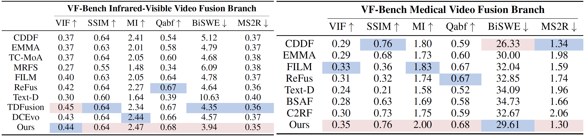

Video fusion is a fundamental technique in various video processing tasks. However, existing video fusion methods heavily rely on optical flow estimation and feature warping, resulting in severe computational overhead and limited scalability. This paper presents MambaVF, an efficient video fusion framework based on state space models (SSMs) that performs temporal modeling without explicit motion estimation. First, by reformulating video fusion as a sequential state update process, MambaVF captures long-range temporal dependencies with linear complexity while significantly reducing computation and memory costs. Second, MambaVF proposes a lightweight SSM-based fusion module that replaces conventional flow-guided alignment via a spatio-temporal bidirectional scanning mechanism. This module enables efficient information aggregation across frames. Extensive experiments across multiple benchmarks demonstrate that our MambaVF achieves state-of-the-art performance in multi-exposure, multi-focus, infrared-visible, and medical video fusion tasks. We highlight that MambaVF enjoys high efficiency, reducing up to 92.25% of parameters and 88.79% of computational FLOPs and a 2.1× speedup compared to existing methods.
Detailed illustration of our MambaVF architecture.

Quantitative evaluation results for the Multi-Exposure Fusion (540p) and Multi-Focus Fusion (480p) task. The red and blue highlights indicate the highest and second-highest scores

Quantitative evaluation results for the Infrared-Visible Fusion and Medical Video Fusion task. The red and blue highlights indicate the highest and second-highest scores
Refer to the main paper linked above for more details on qualitative, quantitative, and ablation studies.